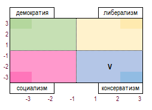

2. ГОСУДАРСТВА
Игровые государства, разделены на два вида территорий – провинции и города (обозначены на карте «квадратом»).
В балансах все типы территорий имеют информацию о населении, риске восстания (РВ), доходе и др.
Столицей страны является город, специально отмеченный на карте (точка внутри квадрата).
Перенос столицы в другую провинцию возможен при выполнении миссии. Захват и присоединение страной столичной провинции врага (равно как и аннексия страны из 1-ой провинции) возможен только при принятии соответствующих нац. идей рядом стран.
2.1. Размер страны
Размер страны определяется количеством входящих в нее провинций и колоний. Каждая провинция увеличивает размер страны на 1, город и колония – на 0,5.
2.2. Стабильность
Стабильность - показатель удовлетворенности населения и его лояльности к правителю. Государства с разными формами правления имеют разный максимальный показатель стабильности. Также на максимально допустимый показатель стабильности влияют принятые нац. идеи, наличие тех или иных персонажей, товаров и др. факторы. Стабильность напрямую влияет на риск восстания (РВ).
Стоимость стабильности – изменяемый в ходе игры параметр. На ее стоимость влияют размер страны, скилл правителя, форма правления, национальные особенности, настройки внутренней политики (ВП), изученные игроком технологии, наличие иноверных и инокультурных провинций, наличие построек, изменяющих стоимость стабильности и др. факторы, однако стоимость стабильности не может быть менее 10д и более 500д.
Стоимость стабильности изменяется также и в зависимости от близости к ее максимальному значению (т.е. увеличение стабильности с +2 до +3 обходится стране дешевле, чем с +3 до +4).
Отдельные действия игрока влияют на снижение стабильности в гос-ве. Перечень этих действий дан в балансе страны.
Повышение стабильности осуществляется при инвестировании в неё установленной балансом страны суммы. Денежные инвестиции допускают увеличение стабильности на 0,5 или 1 пункт, но не в ход, когда соответствующее понижение стабильности было вызвано действиями самого игрока.
Стабильность может изменяться также в результате случайных событий. Изменение стабильности в результате ивентов не носит перманентный характер (не навсегда, а только на данный ход).
Падение стабильности ниже 0 невозможно.
Если действие игрока предполагает снижение стабильности в стране (например, объявление войны без КБ), но имеющийся запас стабильности не позволяет этого сделать (приведет текущее значение стабильности к размеру < 0), то такое действие сделать нельзя.
2.3. Доходы и расходы
Казну государства пополняют:
- Налоги и пошлины
- Экспорт
- Эмиссия денег
- Подарки и подношения (по ивентам)
- Доходы от эксплуатации рабского труда
- Займы
- Контрибуция и иные дипломатические платежи (в т.ч. дань от вассалов)
- Доходы от пиратства
- Доходы от захваченных территорий
- другие доходы, указанные в балансе страны.
Расходы государства составляют:
- Расходы на армию и флот
- Культовые расходы
- Содержание двора.
- Гос.расходы (советники и адм.постройки)
- Соц.расходы (в т.ч. расходы на организованную миграцию населения)
- Обслуживание внутреннего долга
- Импорт
- другие виды расходов, указанные в балансе страны.
Государство несет расходы на строительство, найм войск и ввод военных объектов, экспедиции и др.
Все расходы денежных средств идут из кэша (казны на начало хода). Часть расходов списывается автоматически. Финансирование расходов осуществляется в порядке очередности, описанной игроком в заявке.
Если кэш страны не позволяет провести определенную трату, то Ведущий блокирует этот приказ. Если при подсчете хода у страны возрастают незапланированные расходы (например, в следствие изменения кол-ва или цены закупаемого товара на рынке), то дефицит денег покрывается за счет внутреннего займа и инфляции.
Заимствованные у других стран суммы и эмиссионный доход поступают в распоряжение игрока на следующий ход. Внутренний займ становится доступным уже в текущий ход. Заимствования вызывают рост инфляции.
2.4. Эффективность управления
Эффективность управления государством — показатель того, как полно собираются налоги с подконтрольных территорий.
Эффективность управления зависит от следующих факторов:
1) Размер государства (более крупными по площади странами гораздо сложнее управлять) и удаленность провинций/городов от столицы (чем дальше от столицы территория, тем ею сложнее управлять).
2) Развитие управленческих технологий (технологии улучшают навыки, совершенствуются методы и подходы к управлению, увеличивают лимит управления – т.е. такое количество провинций, которые могут эффективно управляться при соответствующем развитии).
3) Административные способности правителя зависят от его скилла, некоторых перков (персональных характеристик – см. ниже) Правитель с перком «У» (умалишенный) не имеет способностей к управлению. Правитель до 20-го возраста (не совершеннолетний) имеет штраф к управленческим способностям.
4) Развитость дорожной сети (дороги обеспечивают связь столицы и окраин страны, влияют на скорость доставки корреспонденции, военную логистику, внутреннюю торговлю и т.п.).
5) Наличие персонажа-министра.
6) Настройки ВП (страны с уклоном в сторону Централизации обладают бонусом к управлению).
7) Коррупция (см.ниже) снижает эффективность управления страной.
8) Ряд построек и выполненных миссий повышают управление страной.
9) Эффективность управления зависит от принятых нац.идей, формы правления, религий, этнических особенностей и др.факторов.
2.5. Внутренняя политика
Каждый игрок может устанавливать свой «внутриполитический курс», изменяя положение маркеров в следующих социально-политических сферах:
- Религиозность – Светскость (Религиозность способствует приросту о/в и повышает вероятность прихода Священника; Светскость повышает прирост в/о и вероятность появления Знати)
- Традиции – Инновации (Традиции увеличивают прирост кт/о и способствуют появлению Богемы; Инновации – дают увеличение роста н/о и шанс появления Учёного)
- Интернационализм – Национализм (ВП по этому направлению определяет отношение страны к инородцам; положение данного ползунка ВП определяет движение курсора внутренней политики на диаграмме ВП по оси X)
- Централизация – Децентрализация (Централизация повышает ЭУ, Децентрализация – прирост населения; положение данного ползунка ВП определяет движение курсора внутренней политики на диаграмме ВП по оси Y)
- Бесправие – Равноправие (Бесправие снижает РВ, Равноправие увеличивает грамотность населения)
Каждый маркер имеет диапазон движения от -3 до +3, показывая крен внутренней политики (ВП) в ту или иную сторону. Например, ВП Централизация -3 означает, что страна имеет высоко централизованную вертикаль гос.управления, а ВП Бесправие -3 означает, что в стране узаконена крайняя форма неравенства прав и свобод личности.
Игроки могут без штрафа менять настройки ВП в соответствующие годы – обычный период для изменения внутренней политики составляет 5 ходов. Однако, он может быть как меньше, так и больше указанного срока при определенных условиях. Игроки получают информацию о том, что можно осуществить изменение ВП в балансе своих стран.
Если игрок желает изменить ВП раньше срока, то получает штраф -1 к стабильности.
Нельзя делать сдвиг во ВП больше чем на 1 шаг за ход.
Диаграмма внутренней политики
Диаграмма разделена на 4 идеологических «угла» и показывает, какая идеология в стране в настоящий момент главенствует. У каждой формы правления есть одна или несколько «правильных» идеологий. При несоответствии идеологии форме правления в стране возникает политический кризис.
Стратификация населенияВ балансах присутствует информация о классовой структуре населения. Значение данного фактора следующее: каждый класс населения обычно привержен той или иной идеологии (например, духовенство тяготеет к консерватизму, а буржуазия – к либеральным взглядам). Изменение внутренней политики и принимаемые игроком решения могут изменять идеологический настрой населения и изменять соотношение приверженцев того или иного курса.
В конечном счете политические воззрения населения отражаются в таблице (дана в балансе) где определяется наиболее влиятельная фракция – правящая партия. Игрокам нужно стремиться достигать соответствия между главенствующей в их странах идеологии и правящей партией. Несоответствие может влечь политический кризис.
Наличие той или иной правящей партии накладывает свои особенности:

2.6. Формы правления
Страны в игре могут иметь следующие формы правления, каждая из которых имеет свои уникальные особенности:

Если страна удовлетворяет условиям для перехода к иной форме правления, то в балансе появляется соответствующая подсказывающая надпись. Смена формы правления влечет снижение стабильности.
Если в стране происходит революция (восставшие массы населения захватывают Столицу), то изменить ФП можно без штрафа к стабильности.
2.7. Коррупция
Коррупция как явление снижает эффективность управления государством.
На величину коррупции влияет величина кэша (чем больше казна страны, тем сильней тяга к ее разворовыванию) и некоторые другие факторы. Снижение коррупции происходит при определенных событиях и за счет принятия нац. идей.
2.8. Инфляция и банкротство страны
Эмиссия денег, денежные переводы, а также ощутимый дефицит товаров, необходимых населению (ТНП) являются причиной инфляции. Также инфляция появляется вследствие недостатка денег в казне для покрытия текущих расходов страны.
Процент инфляции накапливается и влияет на фактический размер расходов, который несет страна.
Инфляция снижается в результате выполнения миссий, наличия специальных персонажей, ивентов и др. факторов.
Если казна страны равна 0д, то страна признается банкротом. При банкротстве обнуляются очки престижа и распускается армия и флот страны. Информация о банкротстве страны публикуется в итогах хода.
2.9. Грамотность
Чем выше грамотность населения, тем ниже «стоимость» технологий, а также выше личные доходы населения (идет рост собираемости налогов с населения).
Увеличение уровня грамотности происходит за счет принятия нац. идей, постройки ряда зданий, изучения технологий и др. факторов.
2.10. Риск восстаний
Риск восстания – уровень напряженности в обществе, которое готово перерасти в открытый бунт. РВ для каждой провинции рассчитывается отдельно и указан в балансе страны.
Уровень РВ – вероятность, выраженная процентом. При выпадении в конкретный ход события, происходит восстание. Если РВ в локации был < 50%, то восстание не сопровождается появлением взбунтовавшихся юнитов населения. В противном случае в балансе страны в соответствующей локации указываются юниты восставшей фракции. Игрок в текущий ход может вступить с ними бой, если его армия или гарнизон находятся на начало хода в данной локации или вследствие перемещения своей армии через восставшую территорию. Бой с восставшими идет по правилам боевых действий и отражается в сводке боёв в итогах хода.
Если восставшие не будут уничтожены на след. ход после появления, то восставшая территория или присоединяется к соседней стране (если у соседа религия/этнос идентичны восставшей локации), или образует самостоятельное независимое гос-во. Если восстание победило в провинции, то с ней обособляется автоматически и город/города данной провинции.
Если в провинции произошло восстание (провинция/город захвачены восставшими), то ее население не уплачивает налоги, формирование войск в такой провинции становится невозможным.
На РВ оказывают влияние следующие факторы:
1) Общая стабильность в стране.
2) Является ли локация титульной по этническому составу и исповедуемой религии.
3) Настройки ВП.
4) Наличие в провинции построек, снижающих/увеличивающих РВ.
5) Численность населения провинции.
6) Культурные особенности отдельных народов и ФП.
2.11. Репрессии
Репрессиями (уничтожением части населения провинции) можно снижать численность населения при высоком РВ. Решение о репрессиях принимает игрок. Для проведения репрессий в мятежную провинцию должны быть введены войска. Репрессии снижают РВ на 10% (у Деспотий на 20%).
Репрессии отражаются в балансе знаком «репр».
2.12. Повышение автономии
Локации можно повысить уровень автономии, что даст снижение РВ на 10% и снижение сбора налогов.
Повышение автономии осуществляется с отражением в балансе статусом «указ».
2.13. Проповедь
Еще одним механизмом снижения РВ в локации является осуществление религиозного проповедования. Проповедь снижает РВ на 8% в локации с главенствующей в ней титульной религией страны (на 4% в локации со второй преобладающей религией, являющейся государственной для этой страны).
Проповедь отражаются в балансе знаком «проп» и требует расхода о/в.
2.14. Лояльность
Лояльность — это отношение элит страны к действующему правителю, степень ее повиновения и участия в делах страны.
Лояльность выражается в процентах. Максимальное значение 100%. Если присутствуют условия для снижения лояльности, то значение падает, и наоборот.
Факторы снижения Лояльности:
- Более высокий скилл Знати в сравнении со скиллом Правителя;
- Династический кризис (отсутствие наследника мужского пола в странах с монархической ФП, а также наличие 2-х и более наследников);
- События, миссии и др.
Факторы роста Лояльности:
- Высокий скилл Правителя и его личностные характеристики;
- Здания (Дворец, Тюрьма);
- Идеи и миссии;
- Решения Игрока (например проведение Пира/Охоты);
- Персонаж-Поэт;
- События, миссии и др.
Влияние показателя «Лояльность»:
1) Лояльность влечет снижение эфф-сти работы персонажей в стране;
2) Лояльность влияет на МП (мобилизационный потенциал страны);
3) Низкая Лояльность может служить триггером для негативных ивентов — восстания Знати, волнений в Армии и т.п.
2.15. Благочестие
Благочестие — это отношение власти страны к институту Религии.
На показатель Благочестия влияет наличие в стране религ. построек, личностные характеристики Правителя, наличие персонажа-Священника.
При низком значении Благочестия возможны негативные ивенты в стране.